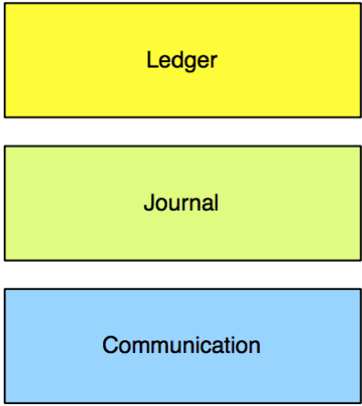
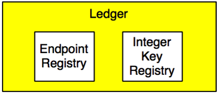
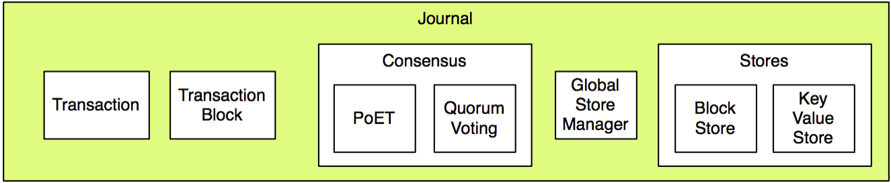

Architecture Overview¶
What is the Sawtooth Lake Distributed Ledger?¶
The Sawtooth Lake Distributed Ledger is a software framework for constructing decentralized ledgers with extensible transaction types. It is comparable to the blockchain ledger that underlies Bitcoin. Sawtooth Lake uses a unique mechanism for reaching consensus on the validity of the ledger based on trusted code running inside a hardware-protected Intel Software Guard Extensions (SGX) enclave.
One of the initial transaction families supported by Sawtooth Lake is the MarketPlace. The MarketPlace Transaction Family establishes the concepts of participants, accounts, assets, holdings, liabilities, and offers in a decentralized ledger to facilitate the exchange of digital assets. The Sawtooth Lake architecture allows the definition of additional transaction families or the consumption of an existing asset-type agnostic transaction family (like MarketPlace) to meet domain-specific needs.
Repository Structure¶
One repository contains all of the the code needed:
- sawtooth-core
Contains fundamental classes used throughout the Sawtooth Lake project, as well as:
- The gossip networking layer
- Basic transaction, block, and message objects
- The base journal implementation
- The PoET journal consensus mechanism
- Built-in transaction families - Endpoint Registry and Integer Key Registry
- The implementation of a server, known as the validator
- acts as a node on the gossip network
- validators exchange and act upon messages, as defined by the core classes and via additional plug-in transaction families like the MarketPlace Transaction Family
- The MarketPlace Transaction Family, located in the extensions
directory.
- demonstrates how to inherit and extend base sawtooth-core object types to implement a custom transaction family
- includes a command line interface called mktclient for interacting with validators running the MarketPlace Transaction Family
- useful for buying, selling and trading digital assets
- Example code, in the form of games, which demonstrate key concepts of Sawtooth Lake
- Tools including a Vagrant environment for easily launching a network of validators
- Source files for this documentation
Core Architecture¶
The Sawtooth Lake Distributed Ledger consists of three major architectural layers: the Ledger layer, the Journal layer, and the Communication Layer.
{kind=link}
Ledgers¶
Ledgers are a conceptual semantic and data model layer for transaction types. Ledgers are described as a ‘conceptual’ layer because they are implemented as a specialization of existing base classes already present in the Communication and Journal layers.
{kind=link}
In addition to some in-built system ledgers (Endpoint Registry, and Integer Key Registry), implementing new classes in the ledger layer allows for the creation of new transaction families. The MarketPlace Transaction Family, located in the extensions directory of sawtooth-core, is a good example of how the ledger layer can be extended.
Journals¶
A journal handles consensus on blocks of identifiers. Identifiers reference transactions, which are globally replicated. In order to confirm blocks, nodes need a copy of the transaction. In this fashion, the journal provides global consensus on block ordering, transaction ordering within blocks, and the content of transactions.
The journal module in sawtooth-core contains:
- the implementation of the base transaction and transaction block classes
- the consensus algorithms
- the global store manager
- the block store and key value store
The consensus journal object is journal.journal_core.Journal in the sawtooth-core repository.
Consensus Mechanisms¶
Sawtooth Lake implements PoET as a consensus mechanism.
PoET and SGX¶
The Sawtooth Lake Distributed Ledger provides a unique mechanism to ensure fairness in the node lottery. Instead of a Proof-of-Work competition amongst nodes, Sawtooth Lake implements a Proof-of-Elapsed-Time (PoET) algorithm for distributed consensus. PoET relies upon a trusted execution environment, Intel’s Software Guard Extensions (SGX), to generate fair, verifiable random wait timers and signed certificates of timer expiration. This mechanism substantially reduces the computation and energy cost of ensuring fair distributed consensus.
The implementation of PoET in Sawtooth Lake runs in a simulated enclave, not a true trusted execution environment. For this reason, attestation that wait timers have been fairly generated is not possible. This version of PoET is intended for experimental purposes and should not be used as the consensus mechanism in any ‘production’ environment.
The PoET implementation is located in sawtooth_validator.consensus.poet0 in sawtooth-core.
Transactions¶
A transaction is a set of updates to be applied atomically to a ledger. The transaction defines the data model and representation. For example, in the IntegerKey Transaction Family (located in ledger.transaction.integer_key in sawtooth-core), the IntegerKeyTransaction is defined as a list of zero or more updates to key value pairs using the defined verbs ‘set’, ‘inc’, and ‘dec’. The associated IntegerKeyTransactionMessage wraps the derived transaction object in a standard message object. There is typically a message type for every transaction type.
Blocks¶
A block is a set of transactions to be applied to a ledger. Other than some specialized transaction block implementations for the consensus mechanisms, new transaction block types are not typically created. The expectation is that multiple transaction types will coexist on single transaction blocks of type journal.transaction_block.TransactionBlock. There is typically a message type for every transaction block type.
Communication¶
The gossip protocol enables communication between nodes. It includes protocol level connection management and basic flow control on top of UDP. A Token Bucket [1] implementation is used to limit the average rate of message transmission.
| [1] | https://en.wikipedia.org/wiki/Token_bucket |
Peers in the gossip network are called Nodes. Nodes exchange Messages. Message handling upon arrival is dispatched via EventHandlers associated with the journal.
Messages¶
Messages represent information to send or receive from peers over the gossip network. Messages are serialized and deserialized using a standard wire format (either CBOR or JSON).
Message types include:
- transaction messages
- transaction block messages
- journal transfer messages
- debug messages (log data)
- connection messages
- shutdown messages
- topology messages
Messages are used broadly across the architecture for both system communication (administrative messages, consensus messages), and for transaction-type specific handling.
Transaction Family Plugin Architecture¶
As mentioned above, the creation of new classes in the conceptual ‘ledger’ layer allows for the addition of transaction families. Via a message handling and dispatch model, new transaction families can register themselves with the underlying journal consensus and global store mechanisms to allow for arbitrary callbacks on message arrival and persistence of the transactions.
If specialized transaction stores are required, those can also be defined and added to the ledger during initialization (via register_transaction_types).
In order to create a basic transaction family, implement the following:
def register_transaction_types(ledger)
Register message handlers for defined message types and add a transaction store to the ledger for the transaction types.
class BasicTransactionMessage(transaction_message.TransactionMessage)
implement __init__
class BasicTransaction(transaction.Transaction)
implement __init__, __str__, is_valid, apply, and dump
Refer to ledger.transaction.integer_key in sawtooth-core for a simple example, or to mktplace.transactions.market_place in sawtooth-core/extensions/mktplace for a more substantial example.
Transaction Families are loaded into the validator in sawtooth-validator via the “TransactionFamilies” config value (see sawtooth-core/validator/etc/txnvalidator.js).